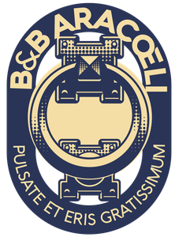
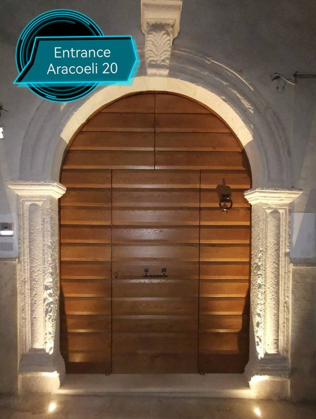
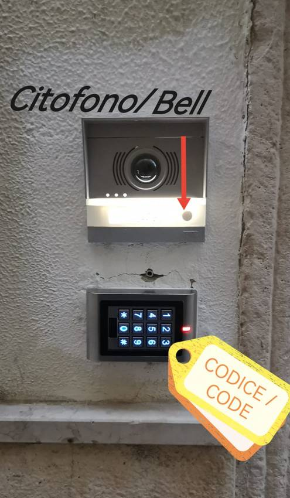
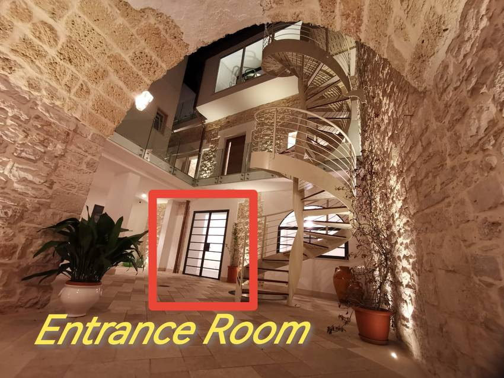
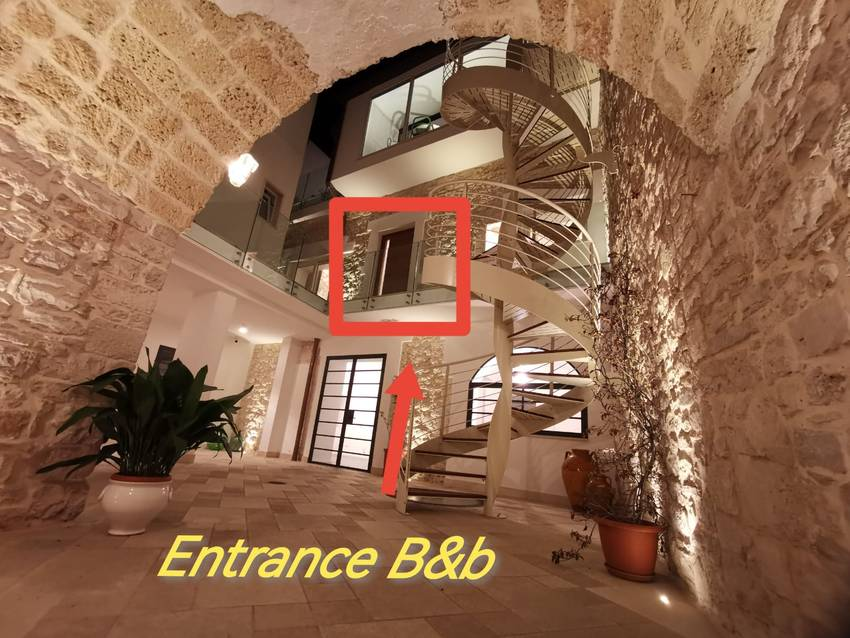
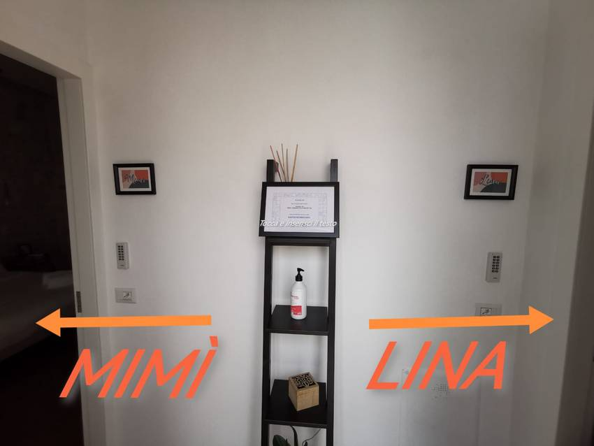
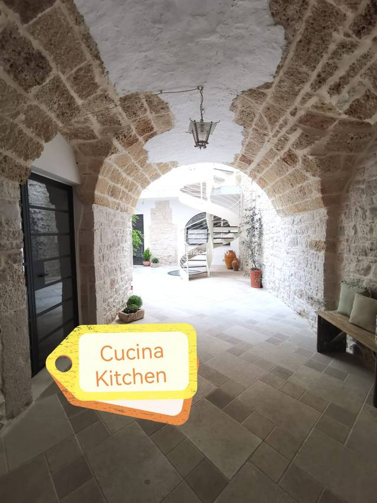

Sei sulla Tappa 2 della Via Peuceta (Cammino Materano). Ecco come entrare e tutto ciò che ti serve.You’re on Stage 2 of the Via Peuceta (Cammino Materano). Here’s how to get in and everything you need.Vous êtes sur l’étape 2 de la Via Peuceta (Cammino Materano). Voici comment entrer et tout ce qu’il vous faut.Sie sind auf Etappe 2 der Via Peuceta (Cammino Materano). So kommen Sie hinein und das brauchen Sie.
Sei sulla Ciclovia dell’Acquedotto Pugliese (BI11). Ecco come entrare e dove sistemare la bici.You’re on the Apulian Aqueduct Cycle Route (BI11). Here’s how to get in and where to put your bike.Vous êtes sur la véloroute de l’Aqueduc des Pouilles (BI11). Voici comment entrer et où ranger votre vélo.Sie sind auf dem Radweg des Apulischen Aquädukts (BI11). So kommen Sie hinein und hier stellen Sie Ihr Fahrrad ab.
Nel cuore dell’Alta Murgia. Ecco come entrare e dove parcheggiare.In the heart of the Alta Murgia. Here’s how to get in and where to park.Au cœur de l’Alta Murgia. Voici comment entrer et où vous garer.Im Herzen der Alta Murgia. So kommen Sie hinein und hier parken Sie.
Qui sotto trovi come entrare, dove parcheggiare e come raggiungere l’Ospedale Miulli.Below you’ll find how to get in, where to park and how to reach the Miulli Hospital.Ci-dessous : comment entrer, où vous garer et comment rejoindre l’hôpital Miulli.Unten finden Sie, wie Sie hineinkommen, wo Sie parken und wie Sie das Miulli-Krankenhaus erreichen.
Apri il portone d’ingresso con il codice che ti abbiamo inviato nel messaggio.Open the main entrance door with the code we sent you in the message.Ouvrez le portail d’entrée avec le code que nous vous avons envoyé dans le message.Öffnen Sie das Eingangstor mit dem Code, den wir Ihnen in der Nachricht geschickt haben.
Digita il codice sul tastierino accanto al citofono (vedi foto). Premi # alla fine.Enter the code on the keypad next to the intercom (see photo). Press # at the end.Tapez le code sur le clavier à côté de l’interphone (voir photo). Appuyez sur # à la fin.Geben Sie den Code auf der Tastatur neben der Gegensprechanlage ein (siehe Foto). Drücken Sie am Ende #.


Il Dormitorio è al piano terra, nel cortile: è la porta indicata in foto (“Entrance Room”).The Dormitory is on the ground floor, in the courtyard: it’s the door shown in the photo (“Entrance Room”).Le Dortoir est au rez-de-chaussée, dans la cour : c’est la porte indiquée sur la photo (« Entrance Room »).Der Schlafsaal ist im Erdgeschoss, im Innenhof: die auf dem Foto markierte Tür („Entrance Room“).
La chiave è sulla porta.The key is on the door.La clé est sur la porte.Der Schlüssel steckt in der Tür.

Entra nel cortile e sali al primo piano dalla scala a chiocciola (“Entrance B&b”). In cima, Mimì è a sinistra.Enter the courtyard and go up one floor via the spiral staircase (“Entrance B&b”). At the top, Mimì is on the left.Entrez dans la cour et montez au premier étage par l’escalier en colimaçon (« Entrance B&b »). En haut, Mimì est à gauche.Gehen Sie in den Innenhof und steigen Sie einen Stock hinauf über die Wendeltreppe („Entrance B&b“). Oben ist Mimì links.
La chiave è sulla porta.The key is on the door.La clé est sur la porte.Der Schlüssel steckt in der Tür.


Entra nel cortile e sali al primo piano dalla scala a chiocciola (“Entrance B&b”). In cima, Lina è a destra.Enter the courtyard and go up one floor via the spiral staircase (“Entrance B&b”). At the top, Lina is on the right.Entrez dans la cour et montez au premier étage par l’escalier en colimaçon (« Entrance B&b »). En haut, Lina est à droite.Gehen Sie in den Innenhof und steigen Sie einen Stock hinauf über die Wendeltreppe („Entrance B&b“). Oben ist Lina rechts.
La chiave è sulla porta.The key is on the door.La clé est sur la porte.Der Schlüssel steckt in der Tür.
Entra nel cortile e sali dalla scala a chiocciola fino al secondo piano (l’ultimo): la Suite è lì.Enter the courtyard and go up the spiral staircase to the top floor (two floors up): the Suite is there.Entrez dans la cour et montez l’escalier en colimaçon jusqu’au deuxième étage (le dernier) : la Suite s’y trouve.Gehen Sie in den Innenhof und steigen Sie die Wendeltreppe bis zur obersten Etage (zweiter Stock) hinauf: dort ist die Suite.
La chiave è sulla porta.The key is on the door.La clé est sur la porte.Der Schlüssel steckt in der Tür.
Una volta entrato nel cortile, raggiungi la tua camera. La chiave è sulla porta.Once in the courtyard, go to your room. The key is on the door.Une fois dans la cour, rejoignez votre chambre. La clé est sur la porte.Sobald Sie im Innenhof sind, gehen Sie zu Ihrem Zimmer. Der Schlüssel steckt in der Tür.
Dormitorio: piano terra · Camere Mimì/Lina: primo piano (scala a chiocciola) · Suite: secondo piano.Dormitory: ground floor · Mimì/Lina rooms: one floor up (spiral staircase) · Suite: top floor.Dortoir : rez-de-chaussée · Chambres Mimì/Lina : premier étage (escalier en colimaçon) · Suite : deuxième étage.Schlafsaal: Erdgeschoss · Zimmer Mimì/Lina: erster Stock (Wendeltreppe) · Suite: oberste Etage.
La cucina è subito a sinistra appena entrato, prima del cortile.The kitchen is immediately on the left as you enter, before the courtyard.La cuisine est tout de suite à gauche en entrant, avant la cour.Die Küche ist gleich links beim Eingang, vor dem Innenhof.

Due parcheggi consigliati a pochi passi dalla struttura:Two recommended car parks a short walk from the property:Deux parkings recommandés à quelques pas de l’établissement :Zwei empfohlene Parkplätze wenige Schritte von der Unterkunft:
📍 Parcheggio 1 — Piazza Dante📍 Car park 1 — Piazza Dante📍 Parking 1 — Piazza Dante📍 Parkplatz 1 — Piazza DantePuoi lasciare la bici nel cortile interno, al sicuro.You can leave your bike safely in the inner courtyard.Vous pouvez laisser votre vélo en sécurité dans la cour intérieure.Sie können Ihr Fahrrad sicher im Innenhof abstellen.
Sotto la scala trovi una presa per la ricarica (comoda per le e-bike).Under the staircase there’s a charging socket (handy for e-bikes).Sous l’escalier, une prise de recharge (pratique pour les vélos électriques).Unter der Treppe gibt es eine Ladesteckdose (praktisch für E-Bikes).
L’Ospedale Miulli è ad Acquaviva delle Fonti (~10 km). Non c’è una navetta privata, ma ci sono collegamenti pubblici giornalieri.The Miulli Hospital is in Acquaviva delle Fonti (~10 km). There’s no private shuttle, but there are daily public connections.L’hôpital Miulli est à Acquaviva delle Fonti (~10 km). Il n’y a pas de navette privée, mais des liaisons publiques quotidiennes.Das Miulli-Krankenhaus liegt in Acquaviva delle Fonti (~10 km). Es gibt keinen privaten Shuttle, aber tägliche öffentliche Verbindungen.
ℹ️ Come raggiungere il Miulliℹ️ How to reach the Miulliℹ️ Comment rejoindre le Miulliℹ️ So erreichen Sie das Miulli 🗺️ Orari e percorso in tempo reale (Moovit)🗺️ Live times and route (Moovit)🗺️ Horaires et itinéraire en temps réel (Moovit)🗺️ Fahrzeiten und Route in Echtzeit (Moovit)Per qualsiasi cosa siamo qui:We’re here for anything you need:Nous sommes là pour toute question :Bei Fragen sind wir für Sie da:
💬 Scrivici su WhatsApp💬 Message us on WhatsApp💬 Écrivez-nous sur WhatsApp💬 Schreiben Sie uns auf WhatsAppBuon soggiorno!Enjoy your stay!Bon séjour !Schönen Aufenthalt!
www.aracoeli20.it